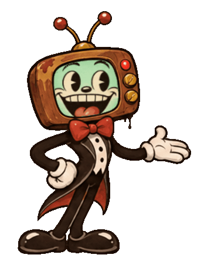
You wake up strapped into a contestant chair in an abandoned game-show studio.
The show is still broadcasting to no one. The host has a television for a head, and he is delighted you're here.
You owe The Network money. Every Deadline the debt comes due, and grows.
Spin the wheel. Let it ride. Miss a payment and the floor opens.
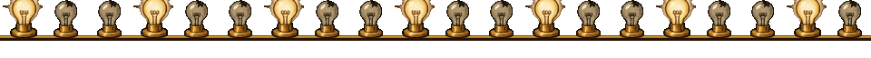
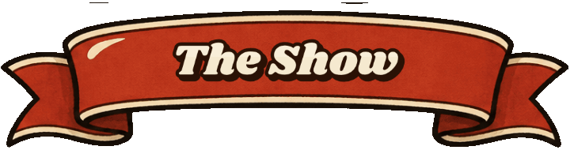
DEAD AIR is a prize-wheel gambling roguelite drawn like a cursed 1930s cartoon. Pull the lever or grab the wheel yourself, ride your streak, and decide when to bank it. Build a shelf of cursed artifacts, rig your own wheel in the Prize Cabinet, and take calls from a Producer who always has a deal for you. It's always a good deal. For him.
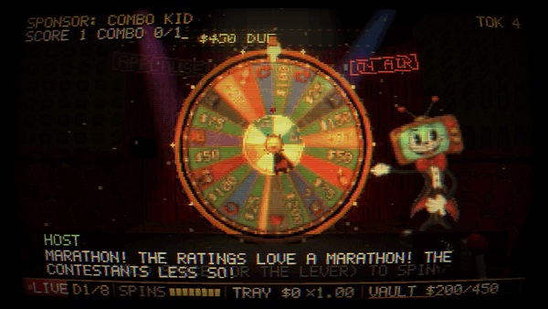
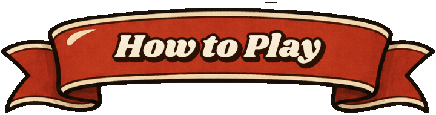
- Spin. Hold the lever and release in the green band, or grab the wheel with the mouse and flick it. The flick's speed is the power, so the sweet spot can be hit by hand.
- Tray or Vault. Winnings land in the Tray, where they're at risk. Every spin you don't deposit raises your Streak. Deposit to bank it safely in the Vault.
- Make the Deadline. Eight Deadlines, each debt bigger than the last. Pay it from the Vault, or the trapdoor decides.
- Rig the show. Spend Tokens in the Prize Cabinet: new wedges, rerolls, gilding, widening and narrowing. Artifacts on your shelf trigger left to right, so order matters.
- Answer the phone. The Producer calls between Deadlines with two deals and a hang-up. Hang up on him enough and someone else calls on the other line.
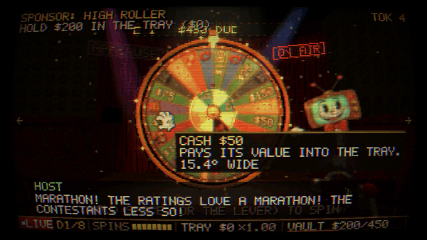
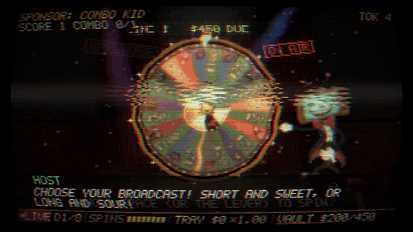
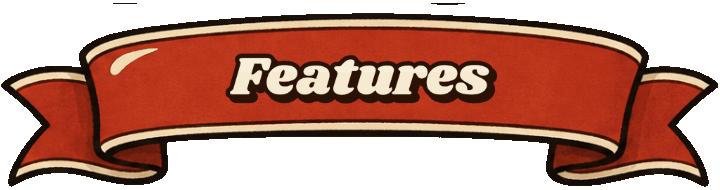
- A real physics wheel with an inner multiplier ring and slow-motion finishes. Releases, pegs and flappers decide every spin.
- A rubber-hose host with a TV for a head: sixteen faces, lip-synced to his voice, gestures on springs.
- 50 artifacts, 37 phone bargains, 12 scratch cards, Sponsor's Challenges, and combos like ECHO, HAT TRICK, NEIGHBORS and DEAD AIR.
- Double or Nothing, once per Deadline, if you dare.
- A fully voiced cast: the Host, the Producer, the Other Line and the Archivist, and a score that warps as the tape wears down.
- A hand-drawn studio rotting in real time, seen through a PS1-era broadcast camera.
- Endless mode, unlockable starting wheels, stakes, and a Prop Room of lore to collect.
- Keyboard, mouse and gamepad. Captions, reduced flashing and colorblind wedge patterns.
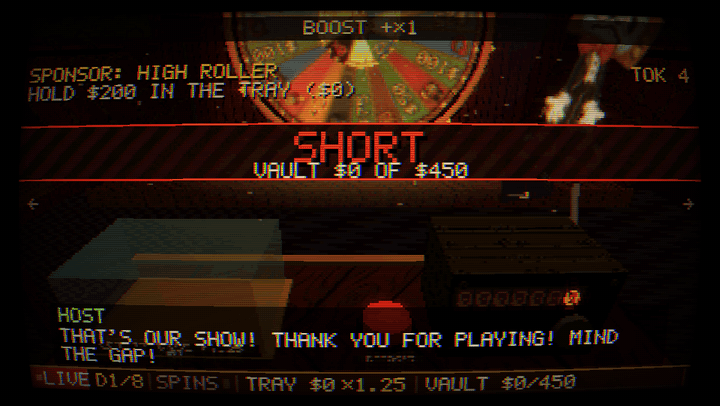
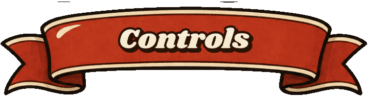
| Look between stations | Arrow keys / WASD · mouse wheel · D-pad / left stick |
| Spin | Hold SPACE (or the lever) and release · grab and flick the wheel with the mouse · hold X / Square |
| Deposit / confirm | ENTER · A / Cross |
| Double or Nothing | D · Y / Triangle |
| Fast mode · Pause | F · ESC · RB / R1 · Start |
| Fullscreen (desktop) | F11 · Alt+Enter |
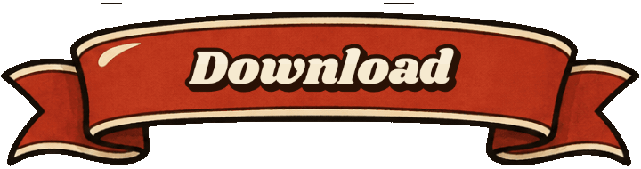
- Play in the browser right here, or download for Windows, macOS (Apple Silicon and Intel) or Linux.
- The itch.io app installs and updates the desktop builds automatically.
- macOS: the app isn't notarized yet. The first time, right-click the app and choose Open.
- Windows: if SmartScreen appears, choose More info → Run anyway.
- Linux: the itch app handles everything. For the download, run dead-air in the folder.
- Saves are kept automatically. Quit any time from the pause menu, and the broadcast continues where you left off.
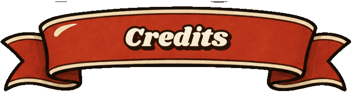
An original game: no real game show's name, logo or catchphrases are used.
Voices: custom ElevenLabs voices. Fonts: Shrikhand, Silkscreen and VT323 (SIL Open Font License). Sound and music sources and licenses are listed in the game's Credits screen.
Contains simulated gambling with in-game money only. There are no real-money purchases or wagers.
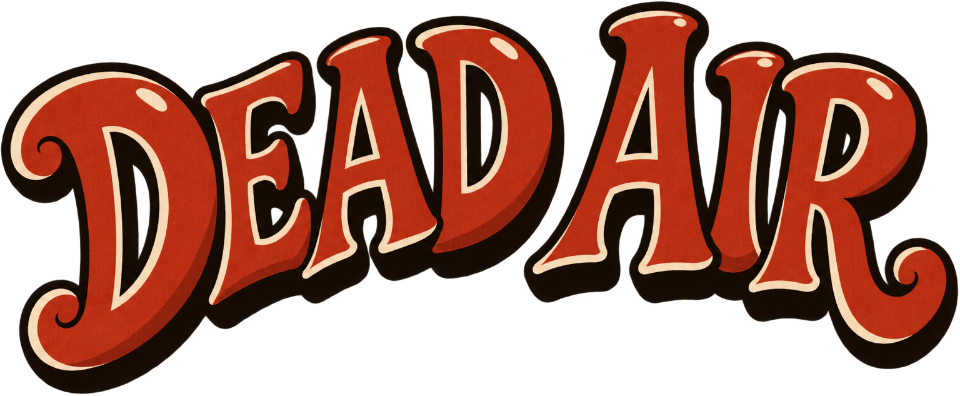